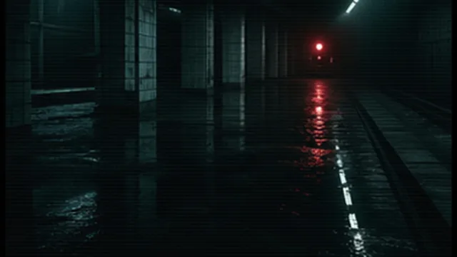
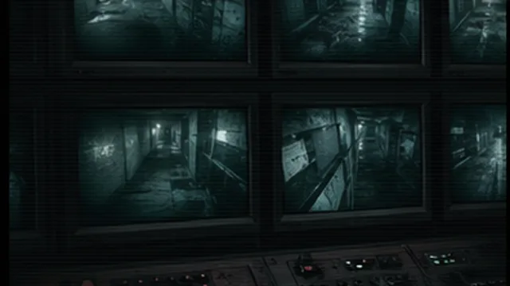
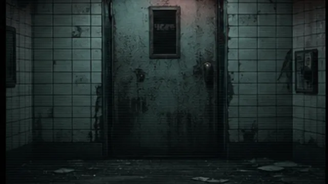
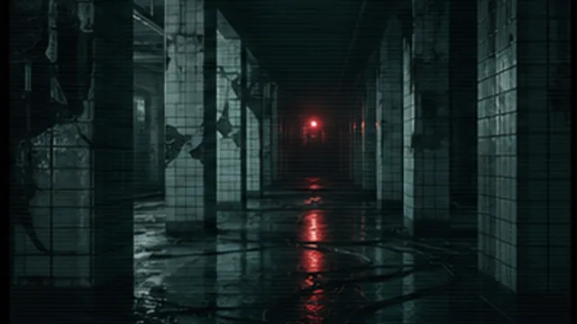
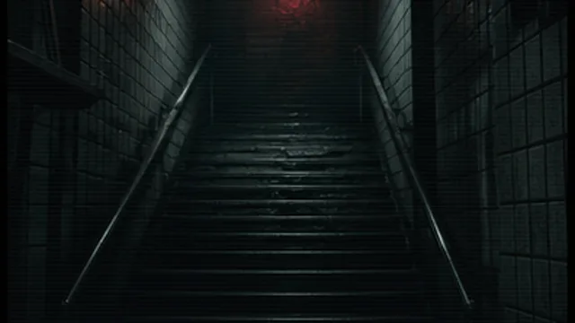
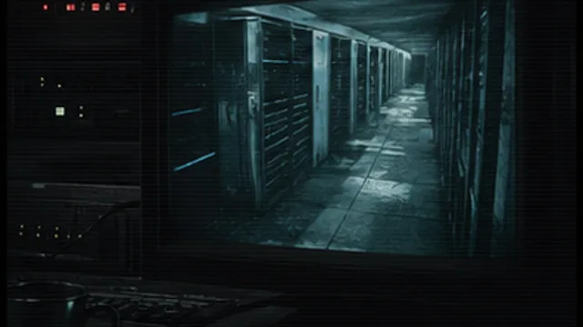
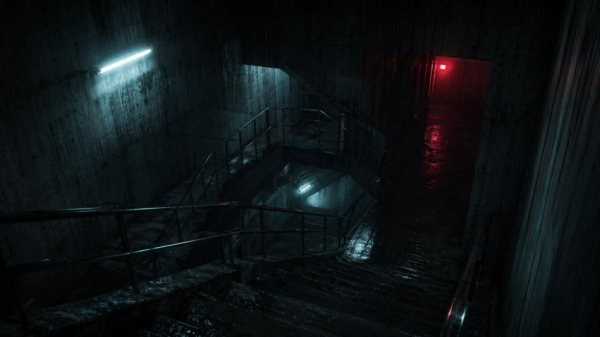

Слушай сигнал
Шум воды, эхо шагов и голос на частоте 31.6 заменяют привычный компас.
build 0.31 / underground sector / signal depth 6
Лиминальный инди-хоррор про станцию, которой нет на карте. Камеры показывают соседние версии коридоров, а звук всегда приходит первым.
about the game
NO SIGNAL - короткий лиминальный хоррор от первого лица. Игрок исследует закрытую станцию, сверяет камеры, ловит частоты и открывает маршруты, которые не совпадают с картой.
Напряжение строится через звук, неправильную инфраструктуру и ощущение, что система уже знает твой следующий шаг.
inventory
recovered tape
Нажатие запускает “архив”: интерфейс меняет состояние, кадр оживает, и сайт начинает ощущаться как часть игры.
gameplay loop

Шум воды, эхо шагов и голос на частоте 31.6 заменяют привычный компас.

Мониторы показывают варианты станции, где часть дверей уже была открыта.

Каждая команда меняет план. Правильный путь часто выглядит как ошибка.
frequency scanner
На нужной частоте интерфейс раскрывает скрытый фрагмент. На остальных слышен только пустой тоннель.
station map
Узлы появляются не по плану, а по звуку. Красные маршруты отмечают участки, которые система уже стерла из навигации.
game feel

Переходы сдвигаются после каждого найденного аудио-фрагмента.

Шаги, шум воды и голос за стеной заменяют привычные маркеры.

Экран наблюдения показывает версию локации, где игрок уже пропал.
signals archive
interactive terminal
> sector 06 terminal ready
> commands: scan / map / open b-7 / play tape
B-7 sequence
sequence incomplete / door sealed

secret ending
B-7 больше не дверь. Теперь это маршрут, который карта отказывается рисовать.
войти в B-7found coverage
«Станция помнит тебя еще до прибытия».
«Хоррор о том, как инфраструктура лжет тебе».
«Никакого монстра. Только доказательство, что коридор изменился».
wishlist / pc / q4 2026